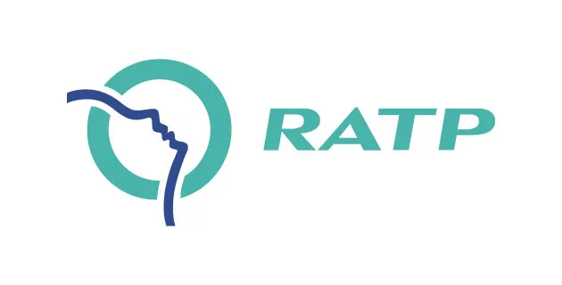
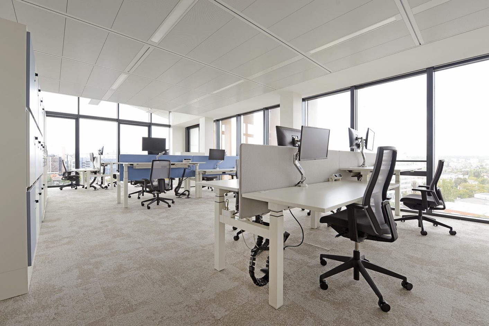
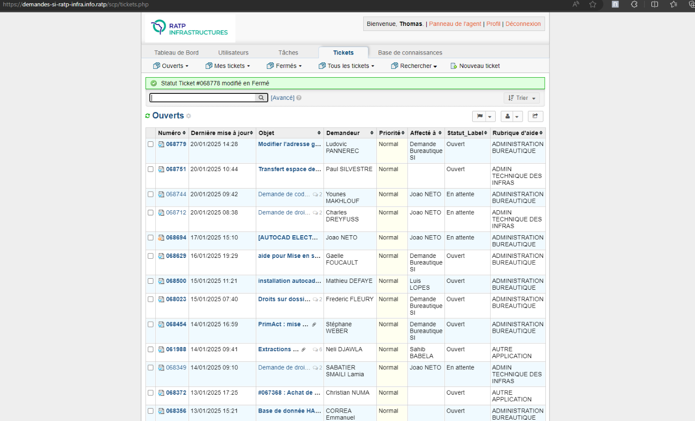
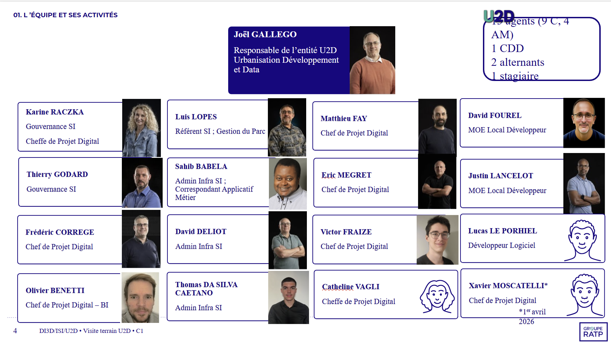
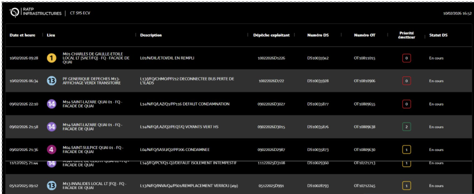
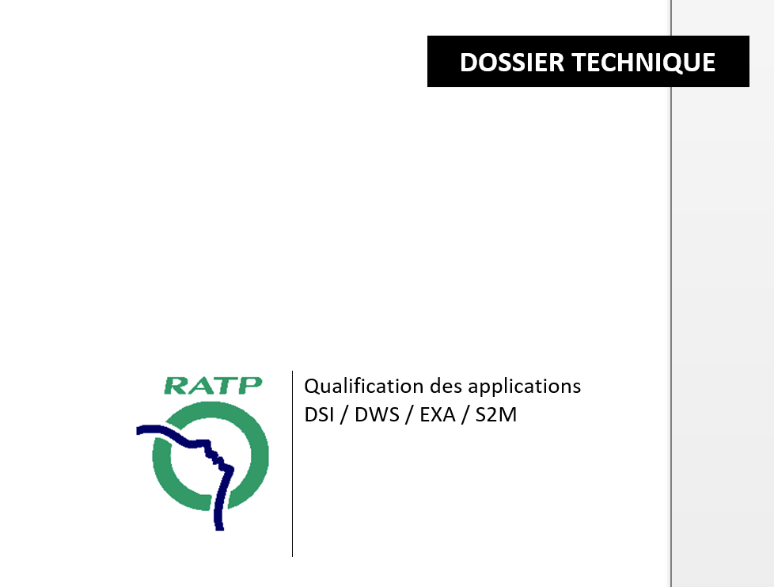

Contrat d'Apprentissage - 2 ansL'Entreprise : Le Groupe RATP
Acteur majeur du transport public mondial, la RATP (Régie autonome des transports parisiens) transporte chaque jour des millions de voyageurs. Avec un chiffre d'affaires de plus de 6,5 milliards d'euros, le groupe se place à la pointe de l'innovation pour la mobilité durable et connectée. L'entreprise est présente avec plusieurs sites dans tout Paris et s'etend même à l'international, notamment en Afrique du Sud, Arabie saoudite, Égypte, États-Unis
👥 Mon Équipe
Au sein de l'équipe U2D(urbanisation, développement & data), j'évolue dans une équipe de 16 personnes chargée de différentes missions selon les pôles ce qui m'as permi de voir plus que du simple réseau.
⚙️ Mes Missions Principales
- Maintenance des infrastructures réseaux
- Qualification logicielle et tests de sécurité
- Support technique niveau 2 (ticketing, supervision...)
📸 Immersion & Réalisations



📝 Mon Bilan d'Apprentissage (2 ans)
📍 Introduction et Environnement
Durant ces deux années d'alternance au sein du groupe RATP, j'ai été intégré à l'unité U2D (Urbanisation, Développement et Data) de la DSI. Au sein d'une équipe de 16 collaborateurs, j'ai évolué dans le pôle dédié à la gestion réseau et au support de proximité. Cette immersion m'a permis de passer d'une découverte du milieu professionnel à une autonomie complète sur des missions d'infrastructure critique.

L'unité U2D à Val de Fontenay Supervision Nagios
Supervision Nagios
⚙️ Missions Techniques et Administration
Mon quotidien a été rythmé par l'administration via Active Directory et l'outil "demandes de droits". J'ai géré le ticketing via OS Tickets puis Optick.
Participation au transfert de la supervision de PRTG vers Nagios, incluant la configuration de serveurs sous Linux via l'éditeur Vim et l'activation des notifications par mail d'alertes Nagios qui générai automatiquement un ticket via la lecture de la boite mail. Puis gestion des seuils et par la suite création d'un fichier scripts et d'un nouveau contact car le nouvel outil de ticketing n'utilisait pas le services mail, il a donc fallu remonter les notifications via un scripts avec un "curl" qui appeler et reconnaissait les commandes Nagios, puis les envoyait a l'API du nouvel outil.
🛡️ Sécurité et Déploiements Terrain
J'ai assuré la mise en place de l'antivirus SentinelOne manuellement sur serveurs et VMs pour garantir la stabilité. Au-delà de l'administration centralisée, j'ai mené de nombreuses interventions sur site (Denfert-Rochereau, Nanterre, Villette, Champs-Élysées):Projet VERDI & Galaxie : Configuration d'écrans de dépêches et transfert du système Cyberweb vers le nouveau système Galaxie, incluant le paramétrage des comptes de service et la résolution de problèmes réseau (DHCP/IP fixe) sur des machines (imprimantes, photocopieur, pcs...).

Projet Galaxie💻 Gestion du parc informatique et logiciels
Responsable de la phase de qualification pour des applications métiers (AutoCad, Revit, Sketchup, etc.). Cela comprenait les tests d'installation/désinstallation, la création de modes opératoires et la validation via Digital'K (qui es un site mis en place par la RATP) afin d'y trouver de nombreux besoins qui nécessite par a suite validation...(tels que le renouvellement d'un PC, l'autorisation du compte administrateur indéfini, et bien plus encore...) pour l'automatisation de l'installation pour un groupe défini dans le centre logiciel. Analyse et extraction de données via Digital'K pour optimiser l'inventaire matériel, identifier les postes inactifs et réduire les coûts de maintenance et de licences.

Dossier de qualificationsConclusion & Acquis
Ces deux années ont été marquées par une montée en compétences sur le réseau en général et sur la gestion d'infrastructures complexes. J'ai appris à travailler en horaires décalés (missions de nuit à la Villette) et à assurer un rôle de conseil auprès des opérationnels de terrain.
Cette expérience confirme mon projet professionnel dans le domaine SISR et ma capacité à intégrer une équipe technique de grande envergure.